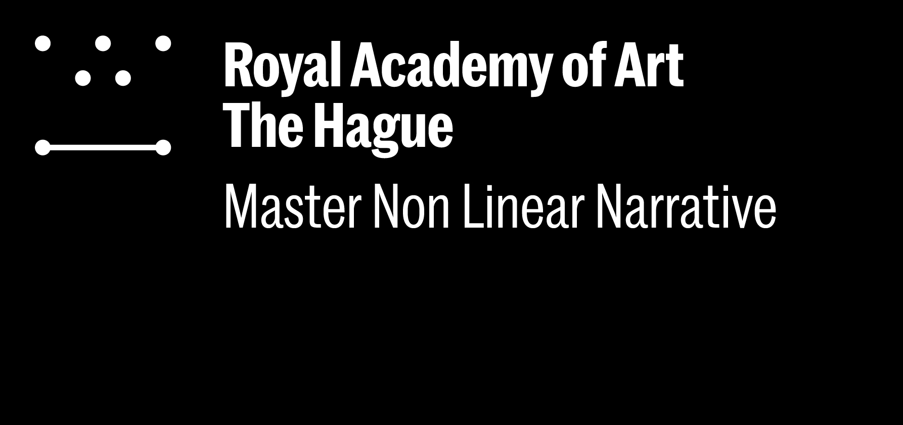
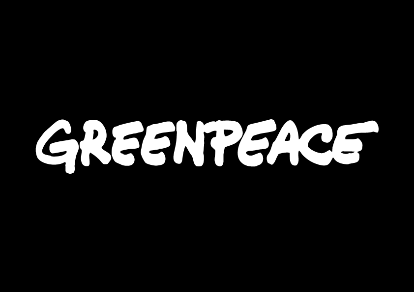

← Back
FINANCING DEFORESTATION FROM THE NETHERLANDS
VIEWS FROM ABOVE is a project of the
Non-Linear Narrative master program
at the
Royal Academy of Art, The Hague (KABK)
and Greenpeace, Amsterdam on the
interdependence of ecology, colonial vision
and
indigenous resistance in the Brazilian Amazon.
A Website by Lila Steinkampf
Coding:
Dan Powers, Pascal de Man,
Nuel van Gelder de Neufville
Concept / Tutoring:
Lauren Alexander, Mijke van der Drift,
Christine Gebeneter, Martin Lloyd,
Lizzie Malcolm, Dan Powers and Niels Schrader

